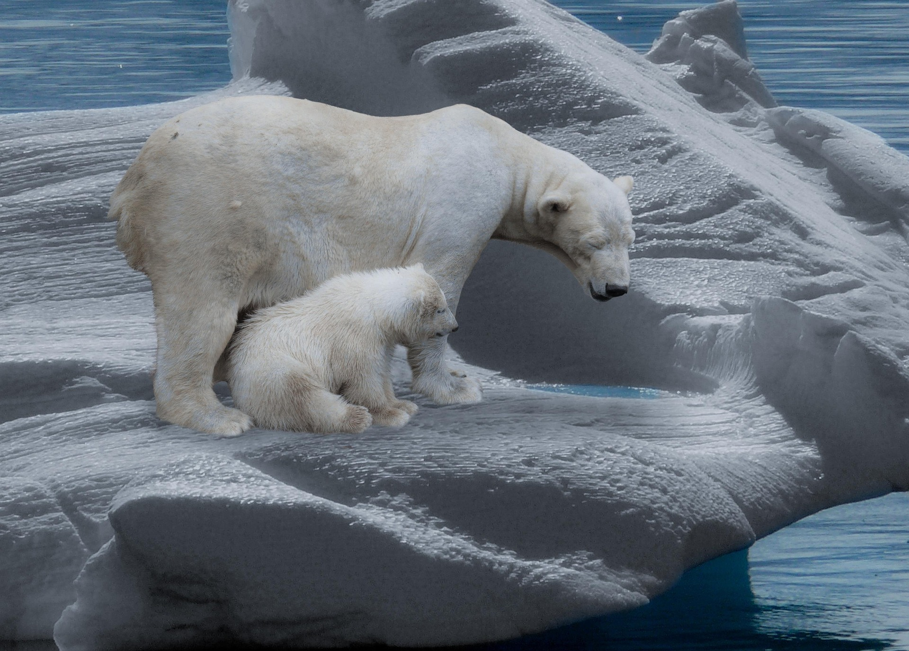
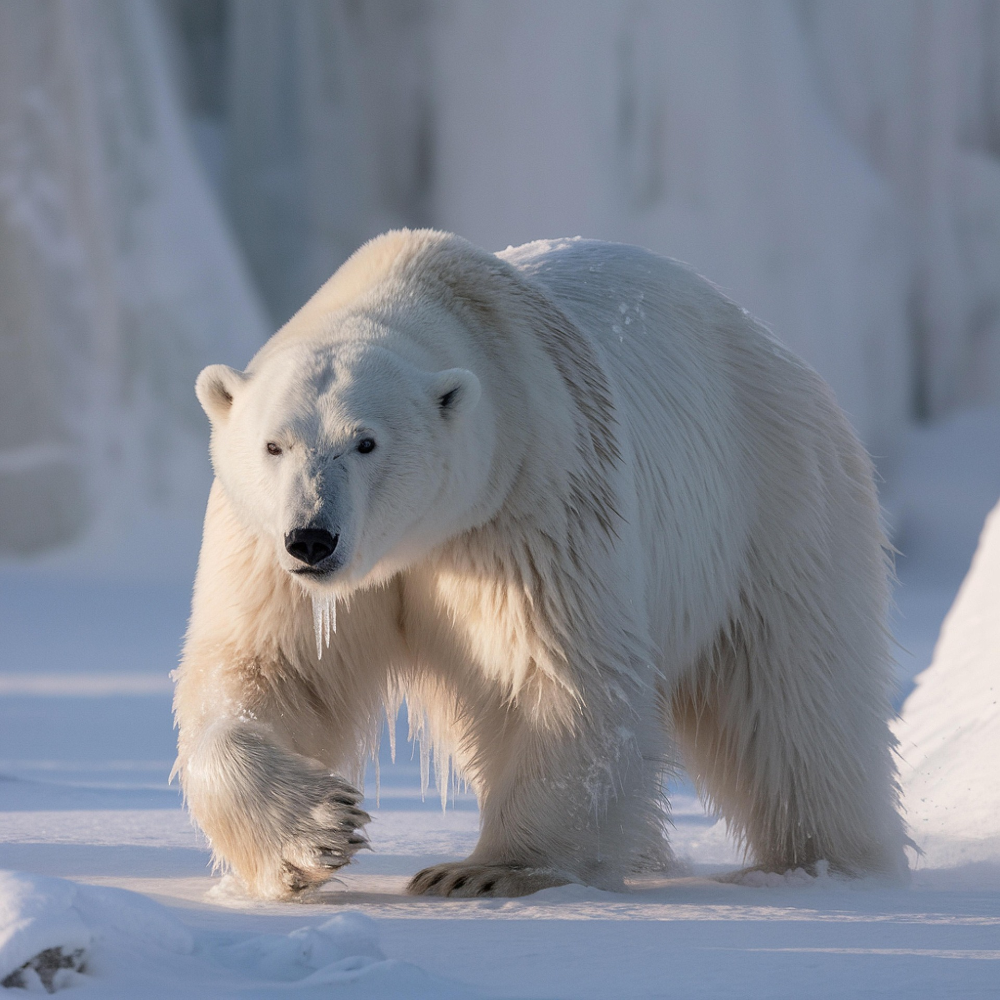
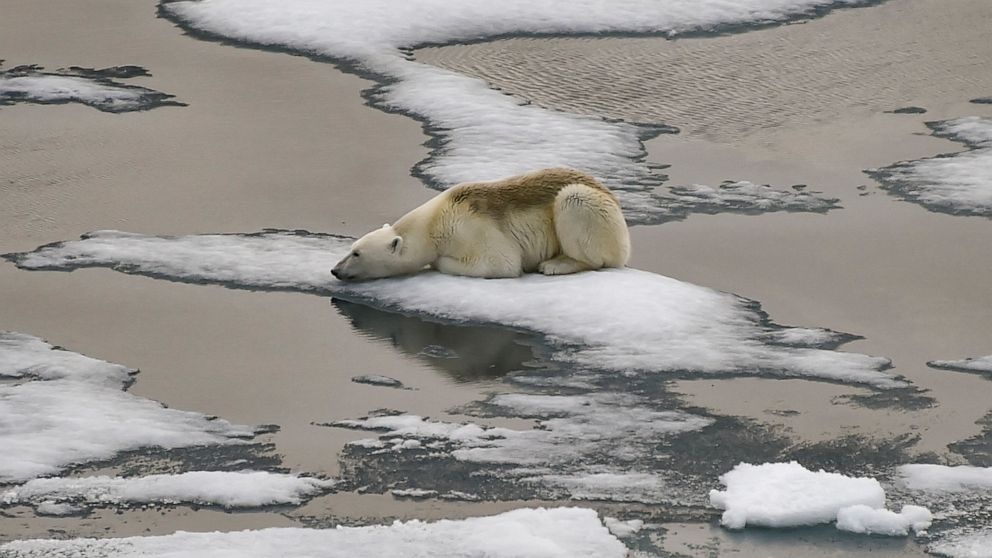
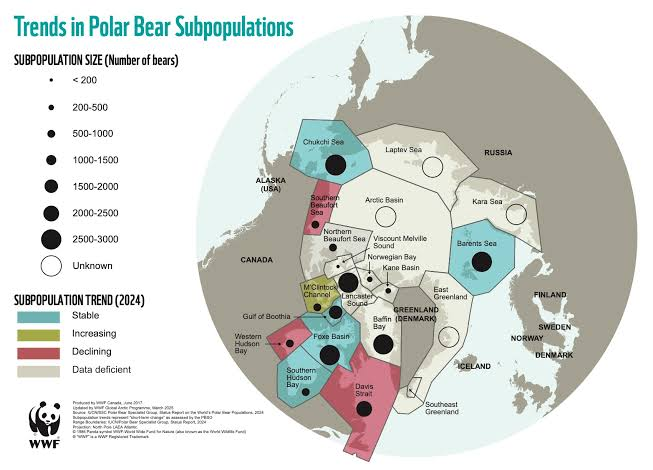

The Polar Bear




About the Polar Bear
Polar bears live in the Arctic region and mainly rely on the Marine Arctic sea ice ecosystems. They are found in the northern polar regions in five range countries including, Canada, the United States (Alaska), Russia, Greenland (Denmark), and Norway (Svalbard). Polar bears are dependent on the annual Arctic sea ice as a floating platform to travel, hunt seals, mate, and build maternal dens. Their diet consists of ringed seals and bearded seals, which they hunt along ice edges and breathing holes.
Endangerment Level
The Polar bears are considered vulnerable which is between near threatened and endangered. The number of polar bears in the wild are about 22,000-31,000.
Threats
A main threat is the loss of seas ice resulting from climate change like human-caused greenhouse gas emissions. Sea ice is also an entire ecosystem inhabited by plankton and microorganisms that support the food chain, including the most important source of food for polar bears, seals. The melting sea ice forces polar bears to spend their summer open-water season along Arctic coastlines. This causes problems with the attraction to people and communities by the smell of garbage, stored food, etc. This brings up major safety issues with how polar bears are being attracted to humans as well.
Prevention
There are programs in place to reduce industrial impacts of oil spill preventions and actions. Monitoring populations to understand their living styles before creating conservation centers. Other programs like the WWF are aiming to protect their habitats as the sea ice melts and their food supply is becoming scarce. Then there are programs to protect important polar bear denning habitat. New oil and gas exploration and drilling threaten vulnerable polar bear populations because this can result in dens bring crushed or disturbed. There are also programs to donate to in order to help make a change and protect polar bears.
Statistics
